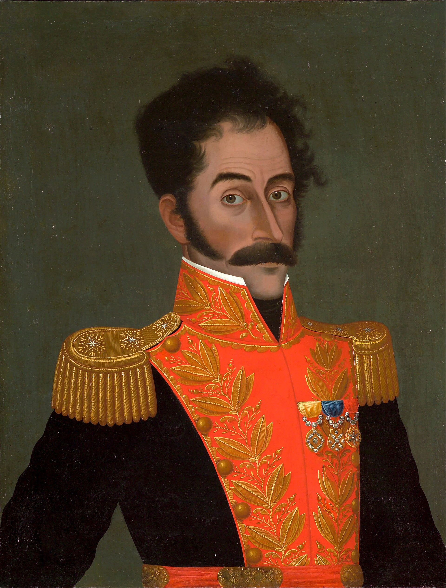
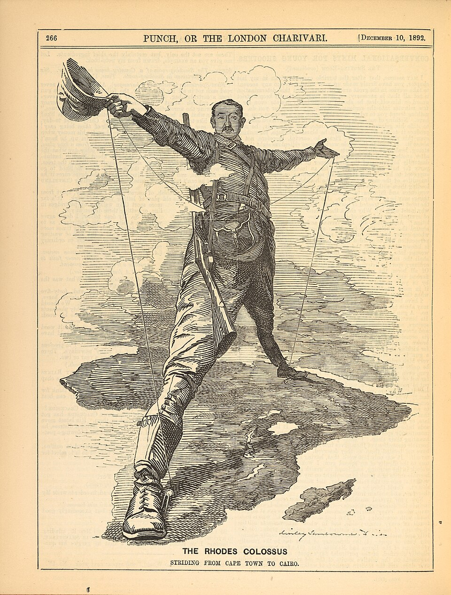
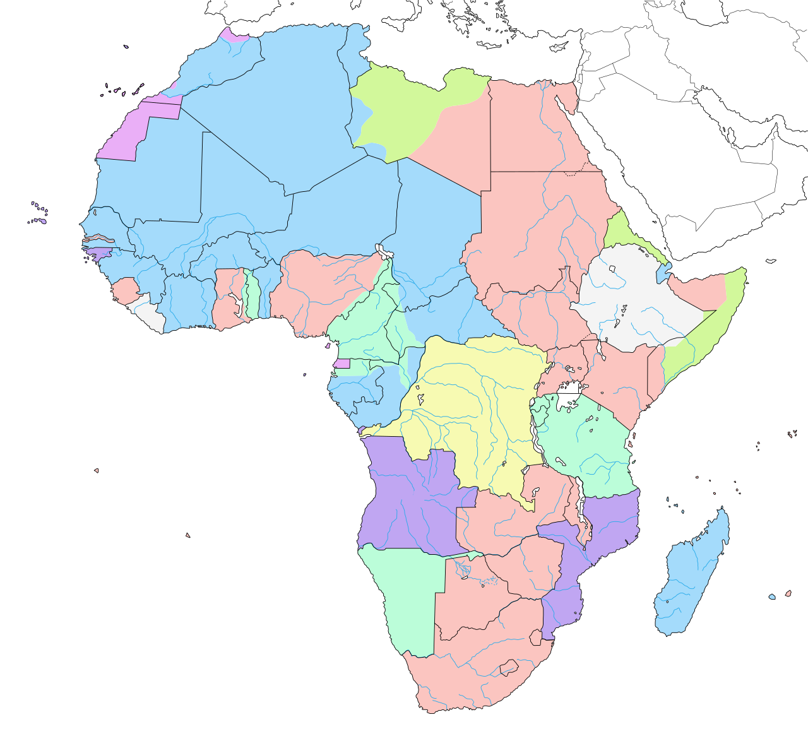
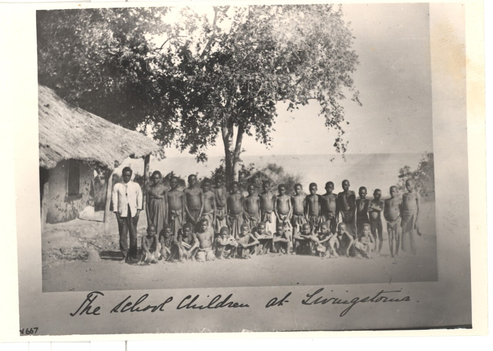
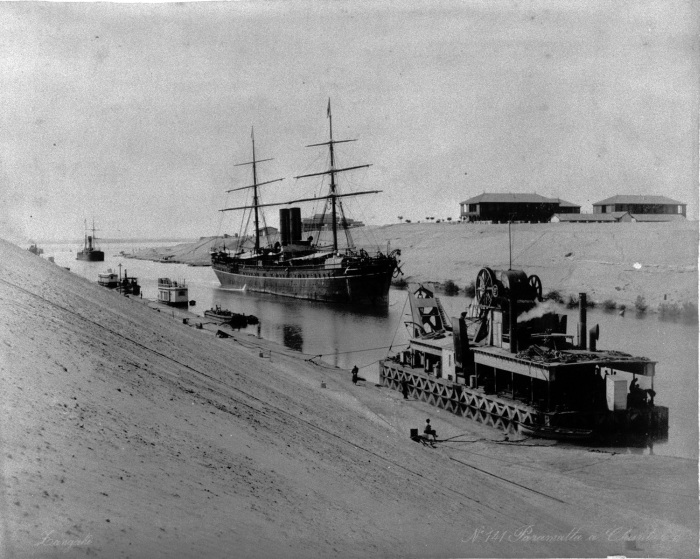
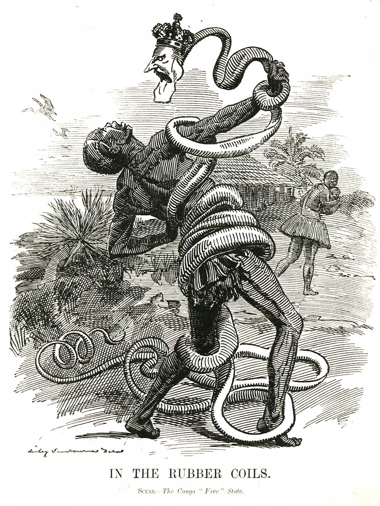
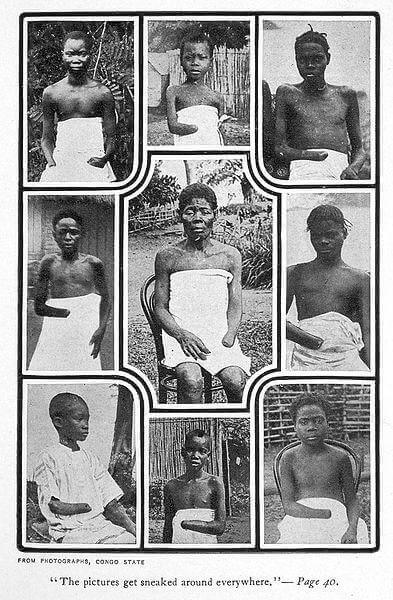
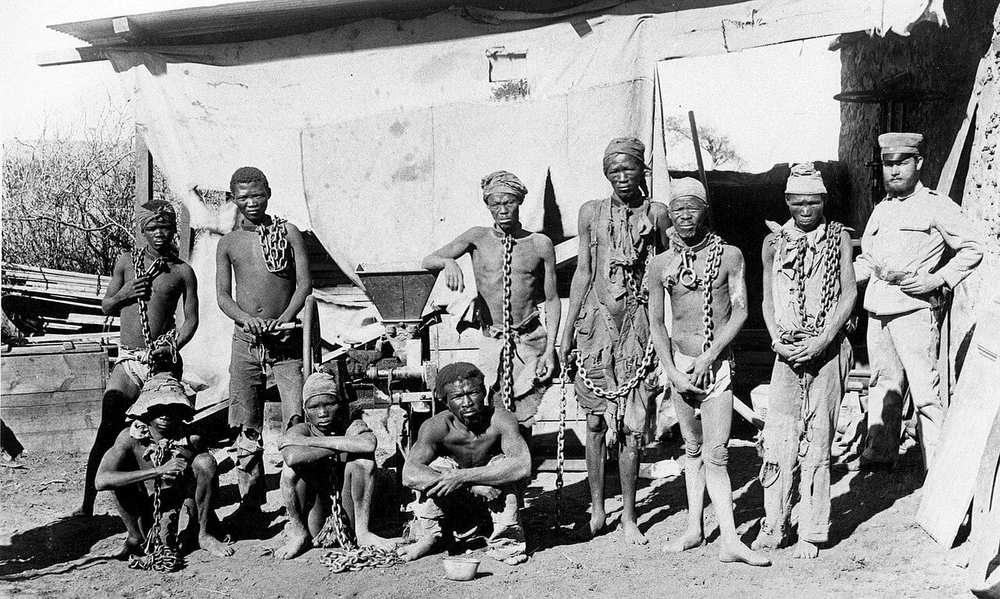
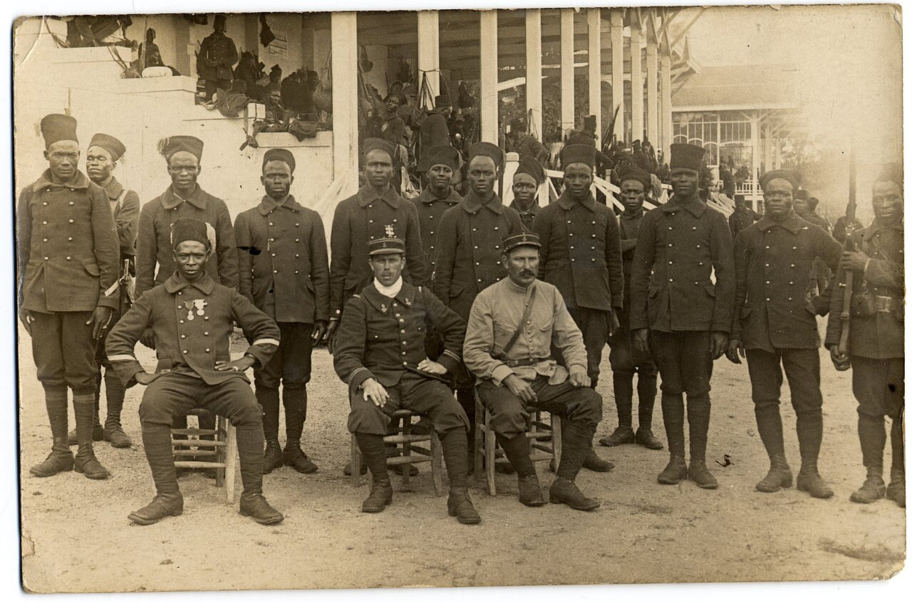

Histoire et éducation à la citoyenneté
11 / 12 réalité sociales
L'expansion du monde industriel
1850 à 1914 · L'impérialisme et la colonisation
- acculturation
- colonisation
- discrimination
- impérialisme
- métropole
- nationalisme

Mise en contexte
Les besoins liés à l'industrialisation et à la croissance économique entraînent les puissances industrielles dans une course pour la possession de colonies au cours de la seconde moitié du 19e siècle. Les continents asiatique et africain seront presque entièrement partagés entre quelques États européens. La colonisation a des conséquences importantes sur le développement économique et social des territoires dominés.
Concepts à l'étude
- Acculturation : le fait d'adopter plusieurs aspects d'une culture étrangère au détriment de sa propre culture.
- Colonisation : l'occupation et l'exploitation d'un territoire par un État étranger, qui y impose son autorité.
- Discrimination : le fait de traiter une personne ou un groupe moins bien que les autres à cause de ce qu'ils sont.
- Impérialisme : une politique qui vise l'expansion d'un pays par la domination d'un territoire étranger. Un pays soumet un territoire par la force et exploite sa population et ses ressources.
- Métropole : l'État qui possède et administre des colonies.
- Nationalisme : l'attachement à une nation, qui peut mener un peuple à réclamer son indépendance ou pousser un État à vouloir dominer les autres. Un septième mot revient sans cesse dans cette réalité sociale. L'assimilation est le fait, pour un pays colonisateur, de chercher à intégrer un groupe dans sa population en lui enlevant son caractère distinctif, c'est-à-dire sa culture. L'acculturation en est la conséquence.
L'Afrique avant la colonisation
Avant d'entrer dans ce chapitre, il importe de rappeler que plusieurs nations habitent et peuplent l'Afrique. Il s'agit du berceau de l'humanité et l'être humain s'y trouve depuis plusieurs dizaines de milliers d'années. Des empires y ont existé, d'autres y ont connu leur chute. Le commerce y est florissant et de nombreux échanges s'y font. Néanmoins, ce n'est pas l'image qu'en ont donnée les colonisateurs européens.
Quelques repères. L'empire du Mali domine l'Afrique de l'Ouest aux 13e et 14e siècles, et sa ville de Tombouctou abrite des écoles et des bibliothèques réputées. Le royaume du Bénin, le royaume ashanti et le califat de Sokoto occupent la région aux siècles suivants. Le royaume d'Éthiopie, chrétien depuis le 4e siècle, traverse toute la période sans être conquis. Le royaume du Kongo, lui, échange avec le Portugal dès 1483.
Situer dans le temps
Le déclencheur : l'indépendance de l'Amérique latine

Source
José Gil de Castro (Lima, 1785 - Lima, 1837) – painter (Peruvian) Born in Lima. Died in Lima. Details on Google Art Project, José Gil de Castro - Simón Bolívar - Google Art Project, Wikimedia Commons. Licence : Domaine public.L'indépendance des États-Unis d'Amérique a profondément influencé les 18e et 19e siècles. En effet, cet événement a permis la diffusion d'idées nouvelles, comme l'autodétermination des peuples et les droits fondamentaux, qui ont trouvé un écho puissant dans les colonies d'Amérique latine, où les tensions sociales et économiques sont présentes.
Plusieurs mouvements d'indépendance se sont alors embrasés presque simultanément. En Amérique du Sud espagnole, des figures comme Simón Bolívar et José de San Martín ont mené des campagnes militaires de grande envergure, en libérant successivement le Venezuela, la Colombie, l'Équateur, le Pérou et le Río de la Plata entre 1810 et 1825. En Amérique centrale et au Mexique, Miguel Hidalgo lança le soulèvement mexicain dès 1810, couronné par l'indépendance en 1821. Le Brésil, quant à lui, suivit une voie plus singulière : la famille royale portugaise, réfugiée à Rio de Janeiro depuis 1808, consentit à une libération pacifique en 1822. Les métropoles européennes perdent donc des accès privilégiés aux ressources naturelles de leurs colonies, ce qui les amène à chercher de nouveaux territoires et de nouvelles richesses à exploiter. C'est là que commence l'histoire de ce chapitre.
L'exploration du continent africain
Source
Auteur inconnu, Henry Morton Stanley meeting David Livingstone at Ujiji, in Wellcome V0006855, Wikimedia Commons. Licence : Creative Commons BY 4.0.Les expéditions visant l'exploration du continent africain se multiplient au 19e siècle. Des explorateurs cartographient progressivement l'Afrique. Financés par les métropoles européennes, ceux-ci sont à la recherche de richesses et de voies de circulation naturelles du continent, comme les fleuves et les rivières. L'objectif est de coloniser progressivement le territoire afin de s'approprier les matières premières, dont les industries européennes ont tant besoin.
En effet, l'industrialisation de l'Angleterre, puis de la France, de l'Allemagne et des États-Unis fait pression sur la demande en ressources naturelles. Les États entrent alors en compétition afin de mettre la main sur celles-ci : zinc, plomb, fer, caoutchouc, coton et bien d'autres.
Source : Service national du RÉCIT, domaine de l'univers social
David Livingstone
Missionnaire de la Société missionnaire de Londres, David Livingstone part pour l'Afrique en 1840. Il a entrepris de nombreux voyages. Entre 1853 et 1856, il est le premier Européen à traverser l'Afrique australe d'un océan à l'autre : il atteint d'abord Luanda, sur l'océan Atlantique, puis Quelimane, sur l'océan Indien. Il a lutté, tout au long de ses voyages d'exploration, pour mettre fin à l'esclavage, toujours présent sur le continent africain.
Henry Morton Stanley
Ce journaliste né au pays de Galles et installé aux États-Unis a été envoyé en Turquie, en Abyssinie et en Espagne, avant de se rendre en Afrique. En 1870, on l'a envoyé à la recherche de David Livingstone, qu'il a d'ailleurs retrouvé sur les rives du Tanganyika. Après son retour en Angleterre, Stanley a reçu la mission de diriger d'autres expéditions en Afrique centrale. En 1874, il est reparti vers les lacs Victoria et Albert, il a également descendu le fleuve Congo, avant de retourner en Angleterre en 1878. En 1879, il est reparti avec le défi de développer le commerce le long du Congo.
Source : Alloprof
Suis sur la carte les grands voyages d'exploration, de 1795 à 1885. Choisis un explorateur pour voir son itinéraire étape par étape.
Les grands voyages d'exploration en Afrique, de 1795 à 1885
Choisis un explorateur
Tracés simplifiés : ils relient des étapes datées, alors que les chemins réels faisaient de nombreux détours. Les frontières d'aujourd'hui sont tracées en pointillé pour se repérer. Fond de carte : Natural Earth.Sources : Wikipédia (David Livingstone, Henry Morton Stanley, Mungo Park, René Caillié, Heinrich Barth, John Hanning Speke, Samuel Baker, Verney Lovett Cameron, Pierre Savorgnan de Brazza, Sidi Mubarak Bombay, chutes Victoria, lac Victoria, lac Albert); Encyclopædia Britannica (Cameron); Université de Princeton (Samuel Baker); Vikidia (Brazzaville); History.com (Stanley et Livingstone); UNESCO (Tombouctou).
La création d'empires coloniaux

Source
Edward Linley Sambourne, Rhodes Colossus Punch 1892, Wikimedia Commons. Licence : Domaine public.La colonisation de l'Afrique est également motivée par un désir impérialiste de plusieurs États européens. Ils veulent étendre leur puissance et leur influence sur tous les continents et toutes les régions du globe. Chacun des pays européens souhaite dominer l'autre et posséder tous les territoires non revendiqués. Ils ne considèrent aucunement les populations locales qui y habitent depuis des millénaires. Parmi les objets de désir, il y a évidemment l'accès aux voies commerciales et aux ressources naturelles. Néanmoins, les États européens souhaitent aussi contrôler certains lieux stratégiques afin d'avoir des avantages marqués sur les autres États.
Impérialisme Politique qui vise l'expansion d'un pays par la domination d'un territoire étranger, dont il exploite la population et les ressources.
Colonisation Occupation et exploitation d'un territoire par un État étranger, qui y impose son autorité et son administration.
Les moteurs de la course
La conférence de Berlin
Source
Adalbert von Roessler, Kongokonferenz, Wikimedia Commons. Licence : Domaine public.La conférence de Berlin, qui s'est tenue de novembre 1884 à février 1885, fut organisée par le chancelier Bismarck, en Allemagne, afin d'établir les règles qui devaient présider à la colonisation de l'Afrique. En effet, depuis 1880 environ, le mouvement des explorations était devenu très politique.
Bismarck, qui avait engagé l'Allemagne, avec retard, dans le processus de partage de l'Afrique, entendait imposer des règles, en particulier le libre accès commercial aux grands bassins fluviaux et l'obligation d'occuper effectivement un territoire avant d'en revendiquer la possession. Ce dernier point eut pour conséquence la course au clocher, le scramble for Africa : Britanniques, Français, Allemands, Belges, Portugais et Italiens se lancèrent dans l'intérieur de l'Afrique, qui fut partagé par les Européens en moins de quinze ans, au prix de quelques guerres contre les royaumes africains.
Source : Encyclopédie Universalis
Les territoires africains sous domination extérieure

Source
Eric Gaba ( Sting - fr:Sting ), Colonial Africa 1913 map, Wikimedia Commons. Licence : Creative Commons BY-SA 3.0.Quelques années avant le début de la Première Guerre mondiale, le continent africain est presque entièrement dominé par les puissances européennes. Sept d'entre elles se partagent le territoire :
- la France;
- la Belgique;
- la Grande-Bretagne;
- l'Allemagne;
- l'Italie;
- le Portugal;
- l'Espagne.
Deux États seulement échappent à ce partage, l'Éthiopie et le Liberia. À l'ouverture de la conférence de Berlin, en 1884, les Européens occupaient environ le cinquième du continent, surtout des comptoirs côtiers. Trente ans plus tard, il ne leur échappe presque plus rien.
Le partage de l'Afrique, de 1880 à 1914
Suis le récit ou fais glisser le temps
Tous les territoires de la carte
Fond de carte : Natural Earth, domaine public. Les frontières sont celles d'aujourd'hui, qui reprennent pour l'essentiel les frontières coloniales. Tracés approximatifs : zones espagnoles du Maroc, Zoulouland, premières possessions françaises au Sénégal, au Haut-Fleuve, aux Rivières du Sud et dans l'estuaire du Gabon. La carte ne montre ni les terres cédées à l'Allemagne en 1911 ni la partie ouest du Togo allemand, aujourd'hui au Ghana. Ligne droite : tronçon rectiligne de plus de 130 km.
Justifier le colonialisme européen
Source
Unknown, Herbert Spencer, Wikimedia Commons. Licence : Domaine public.Bien qu'on parle de darwinisme social, Herbert Spencer est en réalité antérieur à Darwin sur plusieurs idées évolutionnistes. C'est d'ailleurs lui, et non Charles Darwin, qui a forgé l'expression survival of the fittest en 1864. Il a ensuite appliqué ce principe à plusieurs domaines : la biologie, la psychologie, l'éthique et la sociologie. Sa thèse centrale est la suivante : les sociétés, comme les organismes vivants, évoluent d'un état simple vers un état complexe grâce à la compétition. Toute intervention de l'État perturberait selon lui ce mécanisme naturel, en permettant aux moins aptes de survivre et de se reproduire.
La mission civilisatrice
Pour les Européens, la colonisation de l'Afrique est justifiée par le fait que les Africains leur seraient inférieurs et qu'il faudrait les civiliser, en leur apportant les bienfaits de la civilisation occidentale. À l'époque, les notions de supériorité et d'infériorité des races sont omniprésentes. Cette croyance en la supériorité des Européens est notamment renforcée par le fait que l'Europe a connu une révolution industrielle. La civilisation européenne, avec ses nouveaux moyens de transport, sa culture et ses universités de prestige, est vue comme supérieure aux peuples africains. C'est pourquoi les Européens souhaitent imposer leur culture dans leurs nouvelles colonies africaines.
Source : Alloprof
L'assimilation et l'acculturation
Hormis la supériorité militaire, les Européens utilisent l'éducation afin d'assimiler les populations d'Afrique. Les populations africaines acceptent très mal la présence des envahisseurs européens. Même après plusieurs années, les Européens sont considérés comme des étrangers qui volent les ressources des Africains.
Pour faciliter le contrôle de la colonie, les métropoles tentent d'assimiler les habitants en leur imposant leur culture. Les pays colonisateurs construisent donc des écoles, dans lesquelles ils enseignent aux jeunes Africains la langue, la religion, les lois et l'histoire de leur métropole européenne. L'éducation devient alors un outil d'assimilation. La principale conséquence de cette situation est l'acculturation des Africains, c'est-à-dire qu'ils perdent tranquillement leur culture au profit de celle des Européens.
Assimilation Le fait, pour un pays colonisateur, de chercher à intégrer un groupe dans sa population en lui enlevant son caractère distinctif
Acculturation Le fait d'adopter plusieurs aspects d'une culture étrangère au détriment de sa propre culture

Source
Society of Malawi, Historical and Scientific, The school children of Livingstonia, Wikimedia Commons. Licence : Creative Commons BY-SA 4.0.Source
Walther Dobbertin, Bundesarchiv Bild 105-DOA0184, Deutsch-Ostafrika, Wuga, Schule, Wikimedia Commons. Licence : CC BY-SA 3.0 de.Les conséquences du colonialisme
Le travail forcé

Source
Fotograaf / photographer: C. & G. Zangaki, COLLECTIE TROPENMUSEUM Een baggermolen en schepen in het Suezkanaal TMnr 60008663, Wikimedia Commons. Licence : Creative Commons BY-SA 3.0.Dans les différentes colonies africaines, les puissances européennes exploitent les ressources naturelles que sont les métaux, le cacao et le caoutchouc. Pour ce faire, elles aménagent des mines, des plantations, des champs ainsi que des infrastructures de transport, comme des canaux et des voies ferrées. Ces infrastructures visent l'exportation des ressources naturelles vers l'Europe, là où se trouvent les manufactures.
Le canal de Suez en est le meilleur exemple. Creusé entre 1859 et 1869 à travers l'isthme qui sépare la Méditerranée de la mer Rouge, il raccourcit de plusieurs milliers de kilomètres la route entre l'Europe et l'Asie, puisque les navires n'ont plus à contourner l'Afrique. Le chantier emploie des dizaines de milliers d'Égyptiens, d'abord réquisitionnés par la corvée, jusqu'à ce que celle-ci soit abandonnée en 1864 et remplacée par des machines à draguer. Le canal est ouvert à la navigation le 17 novembre 1869. En 1875, l'Égypte, très endettée, vend ses parts de la compagnie au gouvernement britannique, et le Royaume-Uni occupe le pays en 1882 pour protéger la voie d'eau.
Ce sont les Africains qui exploitent ces ressources naturelles et qui construisent les infrastructures. En effet, les métropoles contraignent les populations africaines au travail, ce qui se rapproche de l'esclavage. Cette main-d'oeuvre, bon marché, subit alors des abus en tout genre : sévices corporels, coups de fouet et mutilations.
Le cas du Congo
La colonisation du Congo au 19e siècle est marquée par une exploitation brutale des ressources naturelles et une violence extrême à l'encontre de la population. En effet, le roi Léopold II de Belgique a pris possession du territoire à travers des manoeuvres diplomatiques et politiques qui ont abouti à la conférence de Berlin. Il a gouverné le Congo comme sa propriété privée, et non comme une colonie de la Belgique.
Au Congo, l'exploitation du caoutchouc est devenue le moteur principal de l'économie coloniale. La demande mondiale de caoutchouc, stimulée par l'invention du pneu, a créé une demande importante envers cette ressource. Un système de travail forcé a été mis en place pour maximiser la production. Les villageois étaient contraints de respecter des quotas irréalistes, sous peine de punitions sévères comme des mutilations, des coups de fouet et des sévices corporels envers les membres de leurs familles.
Le nombre de Congolais qui périrent pendant l'époque coloniale est très élevé. Les estimations les plus souvent citées font état d'une réduction de la population d'environ 50 pour cent, ce qui pourrait représenter une perte minimale de 10 millions de vies. Ce déclin est attribué à une combinaison de facteurs, notamment la violence des colonisateurs, la famine et les maladies.
Le Congo de Léopold II en documents
Lis, questionne, puis conclus
- Document 1
- Discours
- 12 septembre 1876
Le roi présente son projet
Léopold II, roi des Belges, devant des explorateurs et des géographes réunis dans son palais, à Bruxelles.
Extrait, en français« Ouvrir à la civilisation la seule partie de notre globe où elle n'a pas encore pénétré »
Source : discours d'ouverture de la conférence géographique de Bruxelles, cité par Hérodote.net.
Le contexte
En 1876, l'intérieur de l'Afrique centrale est encore peu connu des Européens. Léopold II invite des savants à Bruxelles. Il fonde une association qui se dit scientifique et humanitaire. Le roi rêve pourtant d'une colonie depuis longtemps. Il n'ira jamais lui-même au Congo.
Le lexique
- Civilisation : ici, la façon de vivre des Européens, que le roi présente comme supérieure.
- Globe : la Terre.
Les questions
Comment Léopold II présente-t-il son projet?
Il le présente comme une mission généreuse. Il dit vouloir apporter la civilisation. Il ne parle ni de richesses ni de profits.
Que pense-t-il des peuples qui vivent déjà en Afrique centrale?
Il dit que la civilisation n'y a « pas encore pénétré ». Il considère donc ces peuples comme non civilisés. C'est un préjugé très répandu en Europe à cette époque.
Pourquoi faut-il lire ce document avec prudence?
Le roi cherche des appuis pour son projet. Il a intérêt à le montrer sous un beau jour. Les documents suivants montrent ce qui s'est passé ensuite.
- Document 2
- Lettre ouverte
- 18 juillet 1890
Une lettre publique au roi
George Washington Williams, historien et pasteur afro-américain, écrite aux chutes Stanley, au Congo.
Extraits, traduction« Le gouvernement de Votre Majesté pratique la traite des esclaves, en gros et au détail. »
« Le gouvernement de Votre Majesté a été et est encore coupable de mener des guerres injustes et cruelles contre les habitants. »
« Tous les crimes commis au Congo l'ont été en votre nom. »
“Your Majesty's Government is engaged in the slave-trade, wholesale and retail.”
“Your Majesty's Government has been, and is now, guilty of waging unjust and cruel wars against natives”
“All the crimes perpetrated in the Congo have been done in your name”
Source : George Washington Williams, An Open Letter to His Serene Majesty Leopold II, 1890, texte publié par BlackPast. Traduction de la fiche.
Le contexte
Williams a combattu dans l'armée de l'Union pendant la guerre de Sécession. Il est ensuite devenu pasteur, élu à l'assemblée de l'État de l'Ohio, puis historien. En 1890, il parcourt le Congo jusqu'aux chutes Stanley. Ce qu'il voit le choque. Il écrit alors une lettre au roi et la fait publier.
Le lexique
- Lettre ouverte : lettre adressée à une personne, mais publiée pour que tout le monde la lise.
- Traite des esclaves : commerce d'êtres humains.
- En gros et au détail : à grande échelle comme à petite échelle.
Les questions
De quoi Williams accuse-t-il le gouvernement du roi?
De faire le commerce d'esclaves. De mener des guerres injustes et cruelles contre les habitants. Il rend le roi responsable de tous ces crimes.
Pourquoi son témoignage a-t-il du poids?
Il est allé lui-même au Congo. C'est un témoin direct. Il est aussi historien, habitué à rechercher des faits.
Compare avec le document 1. Que remarques-tu?
Le roi parlait d'apporter la civilisation. Quatorze ans plus tard, Williams décrit l'esclavage et la guerre. Le beau discours ne correspond pas à la réalité.
- Document 3
- Rapport officiel
- 1904
Un village qui se vide
Roger Casement, consul britannique au Congo, à propos du district de Lukolela, sur le fleuve Congo.
Extrait, traduction« Lorsque je l'ai visité en 1887, ce district comptait au moins 5 000 personnes. Aujourd'hui, après un recensement attentif, on en compte moins de 600. »
« Les raisons qu'on m'a données pour expliquer cette baisse ressemblaient à celles qu'on m'a données ailleurs : la maladie du sommeil, la mauvaise santé, le manque de nourriture, les méthodes des fonctionnaires locaux pour obliger les gens à travailler et les prélèvements qu'on exige d'eux. »
“This district had, when I visited it in 1887, numbered fully 5,000 people; today the population is given, after a careful enumeration, at less than 600. The reasons given me for their decline in numbers were similar to those furnished elsewhere, namely, sleeping-sickness, general ill-health, insufficiency of food, and the methods employed to obtain labor from them by local officials and the exactions levied on them.”
Source : rapport de Roger Casement au gouvernement britannique, 1904, extraits publiés par l'Université de l'île de Vancouver. Traduction de la fiche.
Le contexte
Le gouvernement britannique demande à son consul d'enquêter. En 1903, Casement remonte le fleuve Congo pendant plusieurs semaines. Il connaît le pays, car il y a travaillé dans les années 1880. Il peut donc comparer avec ce qu'il a vu avant. Son rapport est publié en 1904.
Le lexique
- Consul : représentant d'un pays dans une ville étrangère.
- Recensement : comptage des habitants.
- Maladie du sommeil : maladie grave transmise par une mouche, la mouche tsé-tsé.
- Prélèvements : ce qu'on force les gens à donner, comme du caoutchouc ou de la nourriture.
Les questions
Combien d'habitants le district a-t-il perdus en environ 16 ans?
Plus de 4 400 personnes. Il reste moins de 600 habitants sur 5 000. C'est près de 9 personnes sur 10 qui ont disparu du district.
Classe les causes données. Lesquelles viennent directement du système colonial?
Le travail forcé et les prélèvements viennent directement des fonctionnaires. La maladie et la faim ont d'autres causes. On peut toutefois se demander si des gens forcés de travailler pour d'autres ont encore le temps de cultiver leurs champs.
Les habitants disparus sont-ils tous morts? Que pourrait-il leur être arrivé d'autre?
Pas forcément. Certains ont pu fuir vers une autre région. Le document 4 parle justement de réfugiés. C'est une des raisons pour lesquelles les historiens débattent encore des chiffres.
- Document 4
- Rapport officiel
- 1904
Des otages pour du caoutchouc
Roger Casement, consul britannique au Congo, même rapport.
Extraits, traduction« Un gardien armé, au service d'une compagnie privée, m'a dit qu'il avait capturé onze femmes et qu'il les gardait prisonnières. Il voulait forcer leurs maris à apporter la bonne quantité de caoutchouc au prochain jour de marché. Je lui ai demandé ce qui arriverait si les maris n'en apportaient pas assez. Il m'a répondu aussitôt que les femmes resteraient là jusqu'à ce que leurs maris les rachètent. »
« La moitié de la population était maintenant faite de réfugiés. J'ai interrogé plusieurs groupes. Ils disaient que les soldats du gouvernement les maltraitaient tellement que la vie était devenue insupportable. Chez eux, il ne leur restait plus qu'à être tués s'ils n'apportaient pas une certaine quantité de caoutchouc. J'ai ensuite trouvé d'autres personnes qui ont confirmé ce qu'on m'avait dit. »
“[A sentry in the employ of one of the concessionary private companies] said he had caught and was detaining as prisoners (eleven women) to compel their husbands to bring in the right amount of rubber required of them on the next market day. When I asked what would become of these women if their husbands failed to bring in the right quantity of rubber he said at once that then they would be kept there until their husbands had redeemed them.”
“fully half the population now consisted of refugees… I saw and questioned several groups of these people… such ill-treatment at the hands of the government soldiers… life had become intolerable… nothing had remained for them at home but to be killed for failure to bring in a certain amount of rubber… I subsequently found other (members of the tribe) who confirmed the truth of the statements made to me.”
Source : rapport de Roger Casement au gouvernement britannique, 1904, extraits publiés par l'Université de l'île de Vancouver. Les passages sont abrégés. Traduction de la fiche.
Le contexte
Le roi a confié de grandes régions à des compagnies privées. Chaque village doit livrer une quantité fixe de caoutchouc, un quota. Pour obliger les hommes à aller chercher le caoutchouc en forêt, on prend des membres de leur famille en otage.
Le lexique
- Otage : personne retenue de force pour obliger quelqu'un d'autre à obéir.
- Racheter : ici, libérer quelqu'un en payant, en caoutchouc.
- Réfugié : personne qui a fui sa région pour se mettre à l'abri.
Les questions
Pourquoi le gardien retient-il ces femmes?
Pour forcer leurs maris à livrer le caoutchouc exigé. Les femmes servent d'otages. Le gardien en parle comme d'une chose normale.
Pourquoi tant de gens ont-ils quitté leur village?
Les soldats les maltraitaient. S'ils ne livraient pas assez de caoutchouc, ils risquaient d'être tués. Fuir était le seul moyen de se protéger.
Comment Casement s'assure-t-il que ce qu'on lui raconte est vrai?
Il interroge plusieurs groupes. Il cherche ensuite d'autres témoins, qui confirment les récits. Il compare les témoignages entre eux, comme le fait un historien.
- Document 5
- Texte satirique
- 1905
Le roi a peur d'un appareil photo
Mark Twain, écrivain américain, dans Le soliloque du roi Léopold. C'est le roi, imaginé par Twain, qui parle.
Extraits, traduction« Le kodak a été pour nous une terrible catastrophe. C'est même l'ennemi le plus puissant que nous ayons affronté. »
« Le seul témoin, dans ma longue expérience, que je n'ai pas réussi à acheter. »
“The kodak has been a sore calamity to us. The most powerful enemy that has confronted us, indeed.”
“The only witness I have encountered in my long experience that I couldn't bribe.”
Source : Mark Twain, King Leopold's Soliloquy, Boston, P. R. Warren, 1905, texte intégral sur le projet Gutenberg. Traduction de la fiche.
Le contexte
Au début des années 1900, des missionnaires photographient les victimes du système. C'est le cas d'Alice Seeley Harris, une missionnaire britannique. Ses photos sont projetées sur grand écran lors de conférences en Grande-Bretagne. Mark Twain, très célèbre, met alors des mots dans la bouche du roi pour se moquer de lui.
Le lexique
- Kodak : petit appareil photo portable, du nom de la compagnie qui le fabrique.
- Satire : texte qui se moque de quelqu'un pour le critiquer.
- Soliloque : discours d'une personne qui parle seule.
- Acheter un témoin : lui donner de l'argent pour qu'il se taise ou qu'il mente.
Les questions
Qui parle vraiment dans ce texte? Le roi a-t-il dit ces mots?
Non. C'est Mark Twain qui invente ce discours. Il fait parler le roi pour mieux le critiquer. Le texte dénonce le roi même si c'est lui qui « parle ».
Pourquoi un appareil photo serait-il un ennemi pour le roi?
Une photo montre la réalité à des gens qui ne sont jamais allés au Congo. Elle est plus difficile à contester qu'un récit. Elle a fait réagir le public en Europe et en Amérique.
Que veut dire Twain quand il écrit que le roi n'a pas pu « acheter » ce témoin?
Il sous-entend que le roi achetait le silence des gens. Un appareil photo, lui, ne peut pas être payé pour se taire.
Trier les documents
Pour chaque document, choisis son point de vue. Dis ensuite si son auteur a vu lui-même la situation au Congo.
1. Léopold II, discours, 1876
Point de vueTémoin direct?2. Williams, lettre ouverte, 1890
Point de vueTémoin direct?3. Casement, rapport, 1904 (Lukolela)
Point de vueTémoin direct?4. Casement, rapport, 1904 (otages)
Point de vueTémoin direct?5. Twain, texte satirique, 1905
Point de vueTémoin direct?
Les conséquences
- QuotasChaque village doit livrer du caoutchouc. Ceux qui n'y arrivent pas sont punis. Des femmes et des enfants sont pris en otage.
- PopulationDes villages se vident. Des gens fuient, d'autres meurent de faim, de maladie ou de violence. Les historiens ne s'entendent pas sur le nombre de victimes, mais la plupart constatent une forte baisse de la population.
- 1904Le rapport Casement est publié. Edmund Dene Morel et Roger Casement fondent la Congo Reform Association, une association qui fait campagne contre le système du roi.
- 1905La commission d'enquête que le roi a dû nommer en 1904 publie son rapport. Elle confirme pour l'essentiel le rapport Casement.
- 1908Le 15 novembre, la Belgique enlève le Congo à son roi. Il devient une colonie belge, le Congo belge.
- 1960Le Congo devient indépendant le 30 juin, après 52 ans de colonisation belge.
Pour conclure
Pourquoi le discours de 1876 ne suffit-il pas pour savoir ce qui s'est passé au Congo?
C'est le point de vue du roi, qui parle de ses intentions avant la colonisation. Il ne décrit pas ce qui s'est passé ensuite. Il faut le comparer avec des témoins qui ont vu la situation sur place.
Selon toi, qu'est-ce qui a fini par faire tomber le système de Léopold II?
Les témoignages se sont accumulés pendant des années. Le rapport officiel de Casement, les photos des missionnaires et la campagne de la Congo Reform Association ont alerté l'opinion publique. Le roi n'a plus pu nier les faits.
Les extraits en anglais sont traduits pour la fiche. Les crochets et les points de suspension signalent des passages abrégés dans le texte original. Les photos de victimes ne sont pas reproduites ici.
Source
London Stereoscopic and Photographic Company, Leopold ii garter knight, Wikimedia Commons. Licence : Domaine public.
Source
Edward Linley Sambourne, Punch congo rubber cartoon, Wikimedia Commons. Licence : Domaine public.
Source
Photographie publiée par Mark Twain, King Leopold's Soliloquy, Boston, The P. R. Warren Co, 1905, page 40, Service national du RÉCIT, univers social. Licence : Domaine public.Les frontières tracées après la conférence de Berlin
Dans les années qui suivent la conférence de Berlin, les États européens occupent le continent et fixent entre eux les limites de leurs possessions, par des traités signés deux à deux. Ces frontières sont tracées sans tenir compte des peuples qui vivent là, ce qui crée des tensions. Profitant de ces tensions, les Belges favorisent les Tutsis au détriment des Hutus dans la colonie du Ruanda-Urundi. La création de frontières qui ne respectent pas les populations locales, puis les avantages accordés par les Belges aux Tutsis, ont favorisé l'émergence de la crise contemporaine et du génocide de 1994 au Rwanda.
Collaborer
Certains Africains vont collaborer avec les colonisateurs. En échange de leur aide pour gérer la colonie et éviter les soulèvements, les Européens leur donnent des privilèges. Ces Africains occupent des postes administratifs importants et ont de meilleures conditions de vie. Les Britanniques vont donner de l'argent et des avantages à certains chefs pour acheter leur loyauté et servir leurs intérêts. S'ils refusent ces privilèges, ils devront faire du travail forcé et les colonisateurs trouveront d'autres Africains afin de tenir les postes importants.
S'opposer

Source
Unknown author Unknown author, Herero and Nama prisoners, Wikimedia Commons. Licence : Domaine public.Dans certaines colonies, des révoltes surviennent. On s'oppose à la colonisation du territoire par les Européens. La puissance militaire des colonisateurs est cependant trop forte. Dans le Sud-Ouest africain allemand, la Namibie actuelle, les Héréros se sont soulevés contre les colonisateurs allemands en 1904. L'Allemagne envoie des soldats dans la colonie. La population héréro passe alors de 80 000 à 15 000 personnes en l'espace de dix ans.
La Première Guerre mondiale et les colonies

Source
Jacques Provot, Tirailleurs du 8e bataillon sénégalais du Maroc envoyés en France, 12 septembre 1914, Wikimedia Commons. Licence : Creative Commons BY-SA 3.0.L'Armée d'Afrique, pour la France, était l'un des plus importants contingents, principalement avec ses unités militaires venues d'Algérie, du Maroc et de Tunisie. Le recrutement concernait aussi l'Afrique noire. Les tirailleurs sénégalais en sont l'un des exemples les plus célèbres. Si les effectifs n'étaient en rien comparables à ceux engagés dans le conflit, leurs actions n'en demeuraient pas moins capitales. Ces hommes vaillants et courageux étaient souvent envoyés en première ligne. Ils ont participé à de nombreuses batailles historiques, comme celles de la Somme ou de Verdun. Les colonies étaient, en quelque sorte, des viviers à chair fraîche pour les tranchées.
Sources
- Service national du RÉCIT en univers social
- Alloprof, L'exploration de l'Afrique
- Encyclopædia Universalis
- Wikipédia
- Natural Earth, données cartographiques du domaine public
- Wikipedia, Scramble for Africa
- Wikipedia, French Congo
- Wikipedia, British Somaliland
- Wikipedia, Kayes
- Wikipédia, Conquête de l'Algérie par la France
- Wikipédia, Guinée française
- German History in Documents and Images, traité germano-britannique de 1890
- Hérodote.net, 12 septembre 1876, la conférence géographique de Bruxelles
- BlackPast, lettre ouverte de George Washington Williams au roi Léopold II, 1890
- Université de l'île de Vancouver, extraits du rapport Casement, 1904
- Projet Gutenberg, Mark Twain, King Leopold's Soliloquy, 1905
- Wikipedia, Congo Free State
- Wikipedia, Casement Report
- Wikipedia, Congo Reform Association
- Wikipedia, Alice Seeley Harris
- Wikipedia, George Washington Williams
- Wikipédia (en anglais), David Livingstone
- Wikipédia (en anglais), Henry Morton Stanley
- History.com, When Stanley Met Livingstone
- Wikipédia (en anglais), Mungo Park
- Wikipédia, René Caillié
- Wikipédia (en anglais), René Caillié
- Wikipédia (en anglais), Heinrich Barth
- Wikipédia (en anglais), John Hanning Speke
- Wikipédia (en anglais), Samuel Baker
- Université de Princeton, Sir Samuel White Baker
- Wikipédia (en anglais), Verney Lovett Cameron
- Encyclopædia Britannica, Verney Lovett Cameron
- Wikipédia, Pierre Savorgnan de Brazza
- Vikidia, Brazzaville (traité avec le Makoko et poste de Mfoa)
- Wikipédia (en anglais), Sidi Mubarak Bombay
- Wikipédia (en anglais), Victoria Falls (Mosi-oa-Tunya)
- Wikipédia, Lac Victoria
- Wikipédia (en anglais), Lake Albert (Mwitanzige)
- UNESCO, Timbuktu
- Wikipédia, David Livingstone
- Wikipédia, Henry Morton Stanley